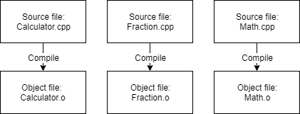
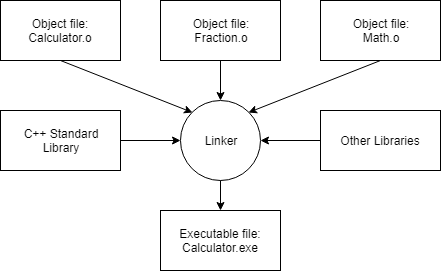

0.5 — 编译器、链接器和库简介
继续讨论上一课中的这张图（0.4 -- C++开发简介)：

我们来讨论第4-7步。
第4步：编译你的源代码
为了编译C++源代码文件，我们使用C++编译器。C++编译器依次处理程序中的每个源代码（.cpp）文件，并执行两项重要任务：
首先，编译器检查你的C++代码以确保其遵循C++语言的规则。如果不遵循，编译器会给出错误（以及对应的行号）来帮助定位需要修复的问题。编译过程也会中止，直到错误被修复。
其次，编译器将你的C++代码翻译成机器语言指令。这些指令存储在一个中间文件中，该文件名为 目标文件目标文件还包含后续步骤所需或有用的其他数据（包括第5步链接器所需的数据以及第7步调试所需的数据）。
目标文件通常命名为 name.o 或 name.obj，其中 name 与生成它的.cpp文件同名。
例如，如果你的程序有3个.cpp文件，编译器将生成3个目标文件：

C++编译器可用于许多不同的操作系统。我们稍后将讨论安装编译器，现在无需安装。
第5步：链接目标文件和库并创建所需的输出文件
在编译器成功完成后，另一个名为 链接器 开始介入。链接器的工作是合并所有目标文件并生成所需的输出文件（例如，你可以运行的可执行文件）。这个过程称为 链接。如果链接过程中的任何步骤失败，链接器会生成一条描述问题的错误信息，然后中止。
首先，链接器读入编译器生成的每个目标文件，并确保它们有效。
其次，链接器确保所有跨文件依赖关系得到正确解决。例如，如果你在一个.cpp文件中定义了某个东西，然后在另一个.cpp文件中使用它，链接器会将两者连接起来。如果链接器无法将某个引用与其定义连接起来，就会产生链接错误，链接过程也会中止。
第三，链接器通常会链接一个或多个 库文件，这些文件是预先编译好的代码集合，经过“打包”以便在其他程序中复用。
最后，链接器输出所需的输出文件。通常这将是一个可执行文件，可以启动（但如果你的项目是这样设置的，它也可以是一个库文件）。

标准库
C++附带了一个庞大的库，称为 C++标准库 （通常称为“标准库”），它提供了一组有用的功能供你在程序中使用。C++标准库中最常用的部分之一是输入/输出库（通常称为“iostream”），它包含在监视器上打印文本以及从用户获取键盘输入的功能。
几乎每个编写的C++程序都以某种方式使用标准库，因此将C++标准库链接到你的程序中是极其常见的。大多数C++链接器默认配置为链接标准库，所以这通常不是你需要担心的事情。
第三方库
你可以选择性地链接 第三方库，这些库是由独立实体（而不是作为C++标准的一部分）创建和分发的。例如，假设你想编写一个播放声音的程序。C++标准库不包含这样的功能。虽然你可以自己编写代码从磁盘读取声音文件、检查它们是否有效，或弄清楚如何将声音数据路由到操作系统或硬件通过扬声器播放——但那将是非常多的工作！相反，你很可能会找到一些现有的软件项目，它们已经有一个实现了所有这些功能的库。
我们将在附录中讨论如何链接库（以及创建你自己的库！）。
构建
由于涉及多个步骤，术语 构建 常被用来指代将源代码文件转换为可执行文件并使其能够运行的完整过程。作为构建结果产生的特定可执行文件有时被称为一个 构建产物。
进阶读者
对于复杂项目，构建自动化工具（例如 make 或 build2）常被用来帮助自动化构建程序和运行自动化测试的过程。尽管这些工具功能强大且灵活，但由于它们并非C++核心语言的一部分，也并非继续学习所必需，因此在本教程系列中我们将不讨论它们。
步骤6和7：测试与调试
这是有趣的部分！现在你可以运行你的可执行文件，看看它有什么功能了！
一旦你能运行程序，就可以对其进行测试。 测试 是评估软件是否按预期工作的过程。基本测试通常涉及尝试不同的输入组合，以确保软件在不同情况下表现正确。
如果程序表现不符合预期，那么你就需要进行一些 调试调试，即查找并修复编程错误的过程。
我们将在后续章节中更详细地讨论如何测试和调试程序。
集成开发环境（IDE）
注意，步骤3、4、5和7都涉及必须安装的软件程序（编辑器、编译器、链接器、调试器）。虽然你可以为这些活动分别使用独立的程序，但一种称为集成开发环境（IDE）的软件包将这些功能全部捆绑并整合在一起。我们将在下一节讨论IDE并安装一个。